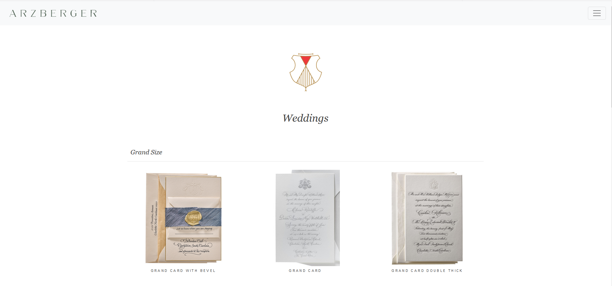
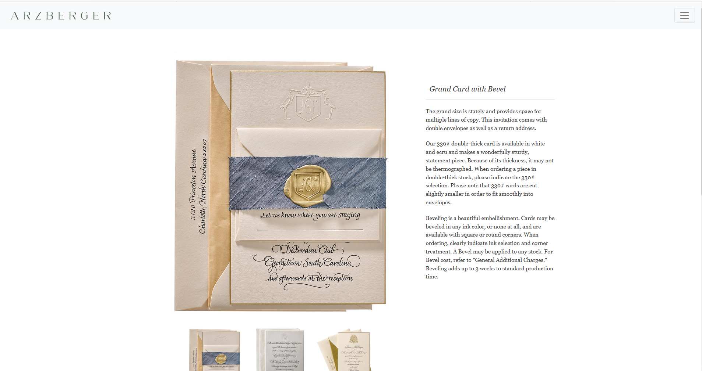

Arzberger has been handcrafting custom stationery for nearly 100 years. Clients write up order forms and fax(!) or email them. After completing some market research, I struck out on a quest to update the system. I came up with an idea to help modernize this interaction. This would save time and money for the company, but more importantly, would make it easier for customers to use. I concepted, designed and prototyped an online catalog showcasing the categories, products, and information needed to place orders. Ease of use was key on this, as the clientele varies widely in age, and many users are not computer savvy. I used Signal, along with Bootstrap to assist with this project, as there would be many pages of similar content and this is an efficient solution.
 Here is a snippet of the jQuery I used when building interaction on this page. I wanted to have a function where upon clicking an image, the item details would populate. The catalog has a lot of crossover between items. Many categories overlap, so you can show multiple similar products that have unique details. By implementing this solution, a customer isn't bombarded with so many choices up front. They can distill their selection, then see the samples, options and pricing that correspond. From a design aspect, this keeps things cleaner, but it also bears in mind that decision fatigue is real and you don't want to scare off customers with too many options out of the gate.
$(document).ready(function(){
$("#detail-2").hide();
$("#detail-3").hide();
$("#thumbnail-1").click(function(){
$("#main-image").attr("src", "img/smith18.jpg");
$("#detail-1").show();
$("#detail-2").hide();
$("#detail-3").hide();
});
$("#thumbnail-2").click(function(){
$("#main-image").attr("src", "img/mcguire.jpg");
$("#detail-1").hide();
$("#detail-2").show();
$("#detail-3").hide();
});
$("#thumbnail-3").click(function(){
$("#main-image").attr("src", "img/campbell18.jpg");
$("#detail-1").hide();
$("#detail-2").hide();
$("#detail-3").show();
});
});
The eventual goal with this project is to turn it into an online ordering portal. Phase one is finishing out the build of the catalog. There will be a universal login for current clients to login and access pricing, tools and resources. Phase two incorporates an online pricing tool. Currently, clients are pricing items themselves off of a paper chart. I would like to build a tool that allows user input of a quantity, as well as customizations, and it will output a price. The third phase moves into an online ordering portal. As the catalog builds, I plan to collaborate with other developers to assist in tying this portal into the company's order entry management tool. To be continued!